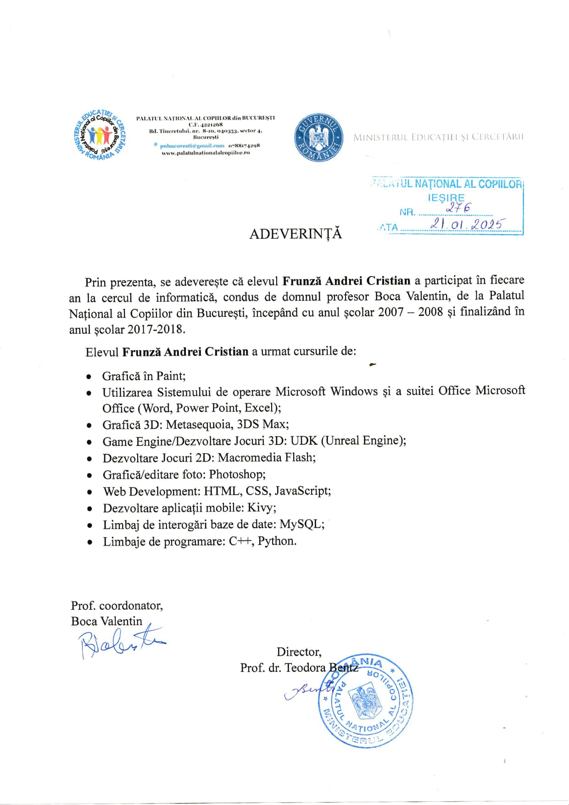

The person
behind the code.
Who I am
My name is Cristian Andrei Frunză. I was born in December 2000 in Bucharest, Romania, and I'm the one-person team behind Necaz Software.
I work as a solo developer building games and apps that I'd actually want to use myself — small, focused projects made with care rather than rushed-out products. Right now I'm pouring most of my time into Minutes to Die, a horror-survival game, and QuickOrg, a private offline finance manager. Both started from things I couldn't find done right elsewhere.
I hold a Bachelor's degree — Licențiat în științe economice (Bachelor of Economic Sciences), field of study Business Administration — from "Nicolae Titulescu" University of Bucharest, Faculty of Economics and Business Administration, class of 2026 (180 ECTS). I passed the bachelor's final exam with a grade of 9.35 / 10. Before university, I graduated from the Mathematics–Computer Science program at Emil Racoviță National College. Beyond the formal education, most of what I know comes from years of building things on my own, breaking them, and figuring out how to fix them.
Fun fact: this very website started as my bachelor's thesis project — "Creating a website for a small business" (Crearea unui site web pentru o mică afacere).
How I got here
I started messing with computers as a kid, around 2007, at the "Palatul Național al Copiilor" computing club in Bucharest. I kept going back every year for over a decade. That's where I learned the foundations of programming, graphics and game development — long before I knew it would become a career direction.

Certificate of participation — Palatul Național al Copiilor, Bucharest. Programming, game development and graphics courses, 2007–2018.
On top of what I learned there, I taught myself Blender for 3D modeling and animation, and Unity Engine for game development. These two are now the backbone of how I build Minutes to Die. Most of what I do today comes from being stubborn enough to keep going when something doesn't work — and curious enough to want to understand why it doesn't.
What I work with
Web
HTML, CSS, JavaScript, PHP, SQL
Programming
C, C++, C#, Java, Python
Game dev
Unity, Unreal Engine 4
3D modeling
Blender, 3DS Max, Metasequoia
2D graphics
Adobe Photoshop, Paint.NET
Office
Microsoft Word, Excel, PowerPoint
The full CV
If you want the complete picture — full work history, languages, professional goals — here's the full version, available in Romanian and English:
Get in touch
If anything here caught your interest — a project idea, a question, a collaboration, or just curiosity — I'd be glad to hear from you.
← Back to home